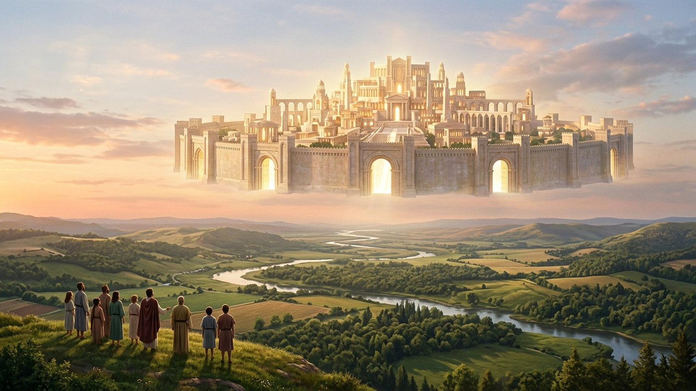
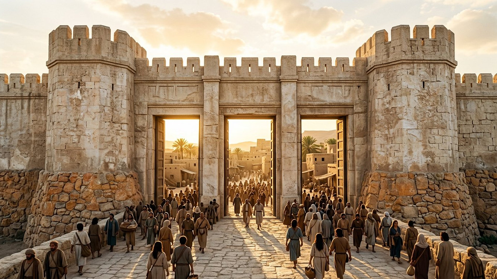
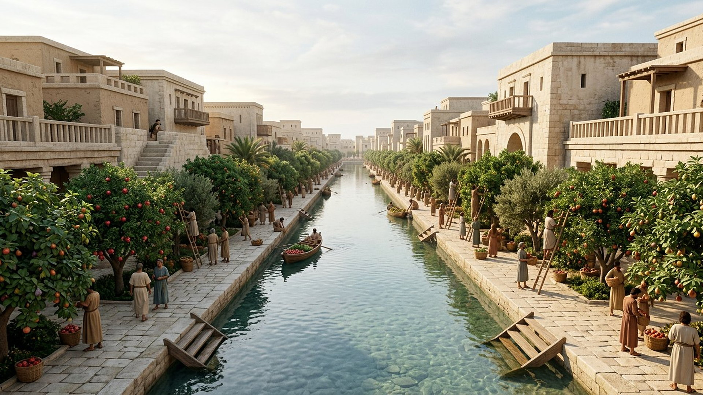

Salle 34 — Révélation 21-22 À VENIR
La nouvelle Jérusalem : une ville qui fait descendre la vie
« Et je vis descendre du ciel, d’auprès de Dieu, la ville sainte, la nouvelle Jérusalem. » — Révélation 21:2 (d’après Segond 1910)
Reconstitution numérique — la ville descend ; le musée ne la pose pas comme un bloc de pierre sur la carte.
Une ville, une épouse, un gouvernement
La vision ne laisse pas le lecteur libre d’imaginer n’importe quoi : l’ange annonce à Jean « l’épouse, la femme de l’Agneau », puis il lui montre « la ville sainte, Jérusalem » (Révélation 21:9-10). La ville est donc aussi un peuple organisé. Dans la lecture retenue par ce musée, elle désigne le gouvernement céleste du Christ et de ses associés, ceux que la salle 32 a vus régner comme prêtres et rois. Elle « descend » lorsque son action bienfaisante s’exerce pleinement en faveur de la terre ; elle n’écrase pas la planète sous une architecture littérale.
Cette lecture explique les dimensions impossibles à loger sur une carte et l’absence de temple : la ville entière devient le lieu de la présence de Dieu. Les humains ressuscités, eux, vivent sur la terre renouvelée, marchent à sa lumière et reçoivent l’eau et la guérison qui viennent d’elle.

Mesurer la ville sans la réduire à un plan
Cliquez sur chaque mesure. Jean décrit une géométrie saturée du nombre douze : le musée y lit une architecture de sens avant d’y chercher un chantier.
La visite en cinq stations
Suivez le guide de la vision, de la descente de la ville au fleuve de vie.
Station 1 / 5

Ce qui disparaît, ce qui demeure
LECTURE PROPHÉTIQUE
Plus de temple, plus de nuit, plus de malédiction
Jean ne voit aucun temple dans la ville, car la présence de Dieu et de l’Agneau y est directe. Ses portes ne se ferment pas, la nuit disparaît, et « il n’y aura plus d’anathème » — plus rien de voué à la destruction. Les images anciennes de séparation sont renversées une à une.
DÉBATTU
Ville littérale ou ville-peuple ?
D’autres lectures attendent une cité future matérielle, parfois posée sur la terre renouvelée ; d’autres identifient la ville à l’ensemble des rachetés dans l’état éternel, sans gouvernement distinct ; d’autres encore la rapportent principalement à l’Église présente. La salle retient la lecture « épouse-gouvernement céleste agissant pour la terre », à cause de Révélation 21:9 et des dimensions, mais elle signale le désaccord.
DÉBATTU
Le cube du Très-Saint (EV-42)
Le récit du temple de Salomon décrit le sanctuaire intérieur comme un cube de vingt coudées. La ville de Jean a, elle aussi, longueur, largeur et hauteur égales. Le parallèle suggère que toute la ville devient un Très-Saint : Dieu n’est plus approché dans une pièce fermée, mais sa présence remplit l’espace humain. Parallèle littéraire fort, preuve matérielle limitée — le badge reste DÉBATTU.
Salle 33 : le grand trône blanc · Salle 32 : les mille ans · Salle 26 : le temple mesuré d’Ézéchiel
Écouter la salle
Transcription de la narration
Bienvenue dans cette nouvelle salle du musée. Elle est consacrée à une ville décrite dans un texte ancien célèbre : portes ouvertes, fondations ornées, rivière claire et arbres fruitiers. Vous explorerez d’abord ses mesures et leurs nombres remarquables, puis vous suivrez cinq étapes commentées. La visite présente plusieurs manières de comprendre cette ville : cité matérielle pour certains lecteurs, image d’un peuple ou d’un gouvernement pour d’autres. Comme toujours, les documents vérifiables, les points débattus et les interprétations portent des étiquettes distinctes.